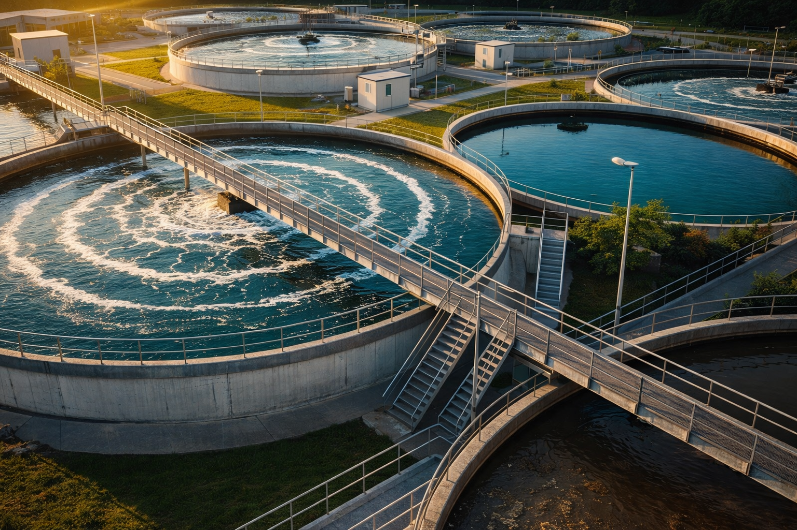
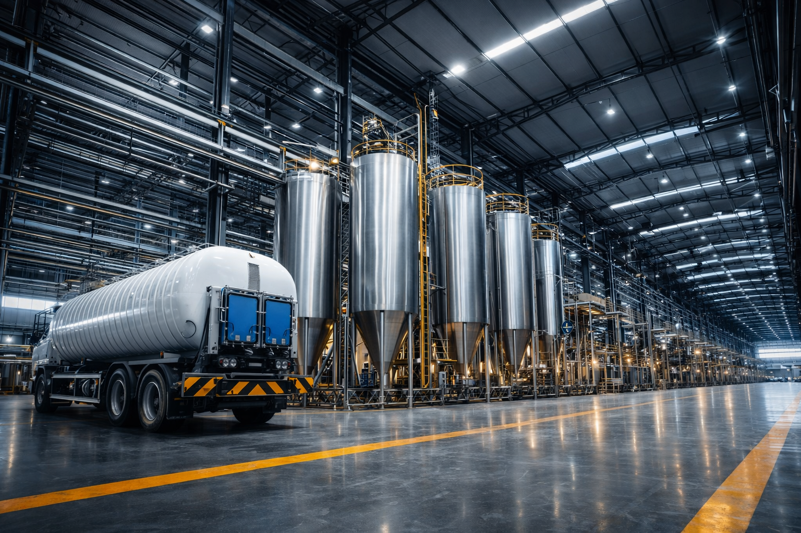

Controle de poeira em vias
Umectação eficiente com redução de consumo de água e maior intervalo entre aplicações.
Engenharia aplicada, sustentabilidade e resultados comprovados para mineração e infraestrutura.
Estrutura técnica para reduzir variabilidade operacional, apoiar conformidade e manter continuidade em campo.
Umectação eficiente com redução de consumo de água e maior intervalo entre aplicações.
Selagem superficial para controle de poeira por ação eólica em taludes, bermas e pilhas.
Reforço estrutural do solo utilizando o próprio material da via operacional, reduzindo manutenção e necessidade de material importado.
Controle de turbidez e sólidos em suspensão com soluções seguras, inclusive em sistemas passivos.
Redução de gorduras, odores e entupimentos com tecnologia biológica enzimática.
Estrutura técnica orientada à operação, controle e suporte em campo.
Métodos definidos conforme cenário operacional, reduzindo variabilidade em campo.
Aplicação assistida, regulagem e acompanhamento conforme necessidade do projeto.
Relatórios técnicos e rastreabilidade operacional para maior previsibilidade.
Atuação prática em cenários operacionais de mineração, infraestrutura e processos hídricos.


Referências para as maiores empresas do Brasil.


Levantamento do cenário, pontos críticos e restrições operacionais.
Definição de método, cronograma e critérios de verificação.
Execução orientada ao ambiente operacional e ao objetivo definido.
Suporte em campo e ajustes operacionais quando aplicável.
Registro técnico e próximos passos para manutenção de performance.
Envie seu cenário e retornamos com a melhor rota de ação.
Eficiência operacional e conformidade ambiental com foco em continuidade de campo.
Melhor recuperação e controle do processo para reduzir consumo e perdas operacionais.
Controle de particulados em vias e pátios com foco em segurança e desempenho operacional.
Estabilização e selagem para reduzir retrabalho e aumentar previsibilidade de conservação.
Redução de riscos e suporte à documentação técnica conforme critérios e auditorias.
Registro e acompanhamento para apoiar decisões e continuidade de performance.